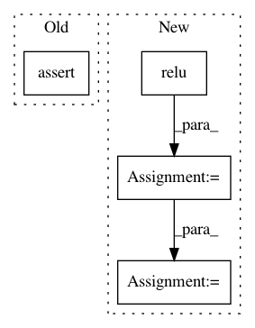

33e3deed4f0d2df250b4231748d4c5a392b84815,test/test_mkldnn.py,TestMkldnn,test_relu,#TestMkldnn#,291
Before Change
def test_relu(self):
x = torch.randn((4, 5), dtype=torch.float32) * 10
self.assertEqual(torch.relu(x), torch.relu(x.to_mkldnn()).to_dense())
def test_relu_(self):
x1 = torch.randn((4, 5), dtype=torch.float32) * 10
x2 = x1.clone().to_mkldnn()
After Change
x = torch.randn((4, 5), dtype=torch.float32) * 10
x1 = x.clone().requires_grad_()
x2 = x.clone().to_mkldnn().requires_grad_()
y1 = torch.relu(x1)
y2 = torch.relu(x2).to_dense()
loss1 = y1.sum()
loss2 = y2.sum()
loss1.backward()
loss2.backward()
self.assertEqual(y1, y2)
In pattern: SUPERPATTERN
Frequency: 3
Non-data size: 4
Instances
Project Name: pytorch/pytorch
Commit Name: 33e3deed4f0d2df250b4231748d4c5a392b84815
Time: 2021-03-15
Author: xiaobing.zhang@intel.com
File Name: test/test_mkldnn.py
Class Name: TestMkldnn
Method Name: test_relu
Project Name: apache/incubator-tvm
Commit Name: c94623ad0dac5fa5ce7a9a3c4ecb794351ebc610
Time: 2020-10-29
Author: anshuman.t@huawei.com
File Name: tests/python/frontend/tflite/test_forward.py
Class Name:
Method Name: _test_relu
Project Name: rusty1s/pytorch_geometric
Commit Name: d9421968d52736a2c1d84d26ef2c335a1be4511b
Time: 2019-05-22
Author: matthias.fey@tu-dortmund.de
File Name: examples/pointnet++_part_seg/pointnet2_part_seg.py
Class Name: PointNet2PartSegmentNet
Method Name: forward